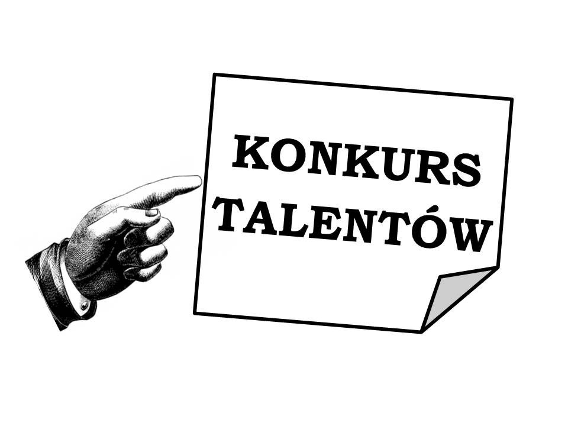

SERWIS DLA ABSOLWENTÓW COLLEGIUM GOSTOMIANUM
Strona została utworzona z myślą o absolwentach I Liceum Ogólnokształcącego Collegium Gostomianum w Sandomierzu. Jeśli należysz do ich grona, to po zarejestrowaniu się uzyskasz dostęp do większej liczby informacji na temat absolwentów, ich osiągnięć, szkoły.
Collegium Gostomianum – szkoła średnia w Sandomierzu, jedna z najstarszych i najbardziej prestiżowych w Polsce, funkcjonująca od 1602 roku. Pierwotnie kolegium jezuickie ufundowane przez Hieronima Gostomskiego i rodzinę Bobolów.
AKTUALNOŚCI
- KONKURS TALENTÓW
Dnia 15.09.2018 odbył się coroczny konkurs talentów. Wzięło w nim udział 56 uczniów, którzy zaprezentowalinam różnorodne zdolności.
WYNIKI KONKURSU
I miejsce Mateusz Lis klasa 3B śpiew II miejsce Anna Smardz klasa 2F akrobatyka III miejsce Ilona Jakubik i Mateusz Kot klasa 1D taniec towarzyski
Serdecznie gratulujemy wszystkim uczestnikom.  - ZBIÓRKA NA RZECZ SCHRONISKA W SANDOMIERZU
Dnia 16.10.2018 w naszej szkole odbyła się zbiórka pieniędzy, zabawek, kocy i poduszek dla psów z pobliskiego schroniska. Zebrana została kwota w wysokości 2078 zł, a także 5 worków potrzebnych psom rzeczy. Dnia 20.10.2018 przekazaliśmy je do schroniska. Mamy nadzieję, że dzięki zbiórce zwierzęta dobrze zniosą zimę.
Serdecznie dziękujemy uczniom klasy IID za zaangażowanie. - OBCHODY 11 LISTOPADA
Uczniowie naszej szkoły czynnie uczestniczyli w obchodach setnej rocznicy odzyskania niepodległości. Skład pocztu sztandarowego: Izaak Kowalski, Barbara Wojtaszek, Iga Lis kl.IIF. - SPRZĄTANIE ŚWIATA
Dnia 29.09.2018 uczniowie naszej szkoły zorganizowali sprzątanie miasta. 654 osoby wyruszyły do parku, nad Wisłę, na stare miasto i do wielu innych miejsc aby zebrać śmieci. Łącznie zebrano 109 worków odpadów. To ogromne osiągnięci, które z pewnością uczyni nasze miasto czystszym.